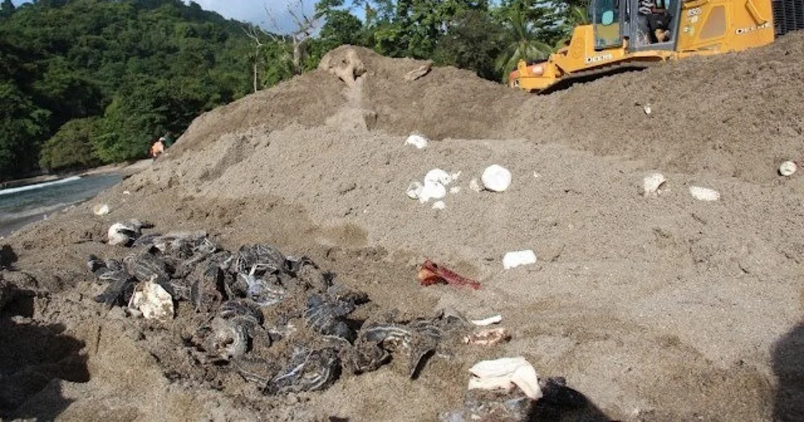
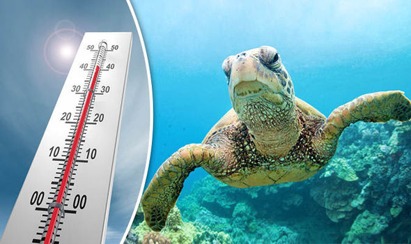

★Sea turtles are strong and durable. Since the time of the dinosaurs, they have swum the seas, protected by special body armor from their natural foes. However, in recent times, due to the quickly expanding human population, there have been new, intense pressures that have made it harder for sea turtles to survive. Five primary risks to sea turtles globally have been recognized by the IUCN-SSC Marine Turtle Specialist Group: Fishing Bycatch, Coastal Development, Pollution and Infections, Direct Take and Climate Change.
FISHING BYCATCH
Thousands to tens of thousands of see turtles are said to perish each year as a result of the fishing business. Turtles caught in gill nets,trawls and longlines are discarded as bycatch. Additionally, the disruption to their food supply and habitat has an effect on those who are able to evade fishing nets.

COASTAL DEVELOPMENT
Because of receding coasts, sea turtle habitats are devastated every year. Sea turtle food sources and nesting places are severely impacted anywhere there is boat vessel traffic, anytime a new hotel or hight-rise is put up along the shore and everywhere the sea bottom is dug up and the beach erodes.
POLLUTION AND INFECTIONS
Sea turtles are harmed by marine pollution in a number of ways. Sea turtles are harmed by ingesting and being entangled in waste such as plastic trash, fishing gear left out to sea, petroleum byproducts and other objects. The immunesystems of the turtles may be weakened by ocean pollution, which may also interfere with nesting habits and hatchling orientation.
DIRECT TAKE
Turtles are killed and traded on the global market for exotic food, oil, leather and jewelry. Over the past 100 years, millions of hawksbill turtles have been killed just for their shells. Conservation efforts have reduced the global trade of luxury and craft items but it still remains an ongoing threat to turtles in parts of Africa, Asia and the Americas.

CLIMATE CHANGE
Climate Change can have a major impact on sea turtles, affecting their natural sex rations, disease outbreaks and the frequency of extreme weather events.
About Us
The Sri Lanka Tourism Alliance welcomes individuals or groups from Sri Lanka or abroad, including those in the public sector who work for the government, educational institutions, regional or industry associations related to Sri Lanka tourism as well as those in the private sector who own or work for a business connected to Sri Lanka tourism. The Alliance does not charge for annual membership.